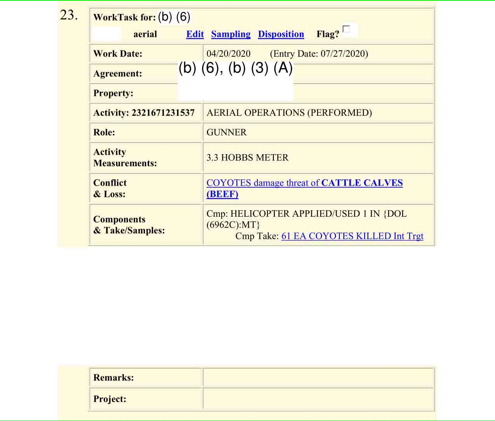

library(tidyverse)library(here)library(janitor)library(gt)library(glue)library(readxl)library(webshot2)library(DT)cat_table2 <-function(df, title, pageLength =NA) {# Check the value of pageLength and adjust the options accordinglyif (is.na(pageLength)) {# Default pagination (no special page length)datatable(df, caption = title) } elseif (pageLength =="all") {# Show all rowsdatatable(df, caption = title, options =list(pageLength =nrow(df), lengthMenu =c(10, 25, 50, 100, nrow(df)))) } elseif (is.numeric(pageLength)) {# Show a specific number of rowsdatatable(df, caption = title, options =list(pageLength = pageLength)) } else {stop("Invalid pageLength value. It must be NA, 'all', or a numeric value.") }}
Code
# PDR Report G # ==============all_killed_euth_df =read_csv(here("data/processed/20240926--all_killed_euthanized_2014-2023.csv")) %>%rename(invasive_status = invasive_is_non_invasive_non_is_species)state_data_all_df =read_csv(here("data/processed/20240926--all_states_2014-2023.csv")) state_killed_euth_df =read_csv(here("data/processed/20240926--all_states_2014-2023.csv")) %>%filter(killed_euthanized >0) %>%select(-c(number_burrows_dens_removed_destroyed, freed_released_relocated, dispersed ,acres_treated )) %>%summarize(n_killed_euth =sum(killed_euthanized), method =paste(glue("{capture_restraint_dispersal_method}: {killed_euthanized}"), collapse =", ") ,.by =c(year, state, species, intentional_unintentional))# Excel Work Orders From FOIA# ==================conflict_df =read_excel(here("data/source/Final responsive records.xlsx"), sheet =1) %>%clean_names() %>%mutate(work_date =ymd(work_date)) %>%mutate(x_fiscal_year =ifelse(month(work_date) >=10, year(work_date) +1, year(work_date)))take_df =read_excel(here("data/source/Final responsive records.xlsx"), sheet =2) %>%clean_names() %>%mutate(work_date =ymd(work_date)) %>%mutate(x_fiscal_year =ifelse(month(work_date) >=10, year(work_date) +1, year(work_date)))# If the month is October or later (>= 10), the fiscal year is the next year. Otherwise, it's the same as the calendar year.# PDF Work Orders from FOIA# ========================animals_df =readRDS(here("data/processed/usda_workorders.RDS")) %>%mutate(x_year =year(x_work_date))# Endangered Animals List From Wildlife Services# ==============================================endangered_animals_df =read_csv(here("data/source/endangered-animals-20240424.csv")) %>% janitor::clean_names() %>%mutate(across(where(is.character), tolower)) # USDA Sheep and Cattle Populationssheep_cattle_populations_df =read_csv(here("data/source/usda-quickstats-cattle-sheep-populations.csv")) %>%clean_names()
Sentence
+digital: But today, Wildlife Services employees still kill hundreds of thousands of noninvasive animals a year, data from the agency shows. Even species considered threatened under the Endangered Species Act, like grizzly bears, are not exempt. So long as livestock or human life are threatened, federal rules allow Wildlife Services to kill those animals, too.
digital: But today, Wildlife Services employees still kill hundreds of thousands of noninvasive animals a year
Code
non_is_animals_killed_df = all_killed_euth_df %>%2filter(number_of_animals_killed_euthanized >0) %>%3filter(invasive_status =="non-is")non_is_animals_killed_df %>%4summarize(total_number_non_is_killed =sum(number_of_animals_killed_euthanized ),.by = year) %>%cat_table2("Number of non invasive (native) animals killed in 2023")
2
Filter for just records that show that animals were killed or euthanized
3
Filter for noninvasive animals that were killed
4
Add the number of animals killed
digital: Even species considered threatened under the Endangered Species Act, like grizzly bears, are not exempt.
+digital: An NPR analysis of those reports shows that Wildlife Services still killed more than 370,000 noninvasive animals across the country in the 2023 fiscal year.
Get animals killed totals by species and invasive status
4
Create a column that lists the top 5 animals killed per invasive status
Sentence:
+digital: And over the past nine years, Wildlife Services killed 30 threatened grizzly bears and at least 1,500 gray wolves in states where they were otherwise supposed to receive protection under the Endangered Species Act, like in Minnesota and Wisconsin.
Timeline of Gray Wolf Protections
We arrived at it by looking at the state breakdown in the PDR G report and comparing it to this timeline.
“March 9, 1978 – The Service issued a final rule reclassifying the gray wolf as endangered in Minnesota and threatened across the rest of the lower 48 states”.1
“In 2011 Congress directed FWS to reinstate a rule delisting the gray wolf in the Northern Rocky Mountains other than Wyoming. FWS then delisted the gray wolf in Wyoming in 2012. After the U.S. District Court for the District of Columbia vacated the rule delisting the gray wolf in Wyoming in 2014, the U.S. Court of Appeals for the District of Columbia (D.C. Circuit) reinstated the rule in 2017.”2
“Beginning in 2017, therefore, the gray wolf in the lower 48 states was divided into four separate groups for ESA purposes: (1) the Northern Rocky Mountain DPS was not listed; (2) gray wolves in Minnesota were listed as threatened; (3) the Mexican gray wolf subspecies in Arizona and New Mexico was listed as endangered beginning in 2015; and (4) gray wolves in all other areas of the lower 48 states were listed as endangered”3
“Effective 2021-01-04, Trump administration removed all gray wolves from the endangered list and stripped their legal protections (except for the Mexican Wolf in the Southwestern Population)”4
“On February 10, 2022, a court order vacated the November 3, 2020, rule that removed ESA protections, reinstating ESA protections for gray wolves in the lower 48 states, excluding the Northern Rocky Mountains.”5
“Northern Rocky Mountain distinct population segment (Idaho, Montana, Wyoming, eastern one-third of Washington and Oregon, and a small portion of north central Utah.)”6
Timeline of Grizzly Bear Protections
Grizzly bears have been protected in the lower 48 since 19757
Code
Data source: PDR G Report
state_killed_euth_df %>%1filter(species =="wolves, gray/timber") %>%mutate(protected_status =case_when(2 year %in%c(2015,2016) &!(state %in%c("id", "mt", "wa", "or", "ut")) ~"protected",3 year %in%c(2017:2020) &!(state %in%c("id", "mt", "wa", "or", "wy")) ~"protected", year %in%c(2021) ~"not_protected", # <4>,5 year %in%c(2022) ~"not_protected", year %in%c(2023) &!(state %in%c("id", "mt", "wa", "or", "wy")) ~"protected",TRUE~"not_protected")) %>%summarize(n =sum(n_killed_euth), .by = protected_status) %>%cat_table2("Wolves that were killed while under protection from 2015-2023")
1
Filter just for Gray Wolves
2
From 2015 to the end of 2016: wolves were not protected in Idaho, Montana, Washington, Oregon or Utah (Northern Rocky population but not including Wyoming) and protected everywhere else because of the 2011 ruling.
3
From 2017 to 2021-01-04 : the entire Northern Rocky Population was not protected (since wolves delisted in Wyoming). In Minnesota the wolves were considered threatened and in the rest of the lower contiguous 48 they were endangered.
5
All gray wolves regained protection except for the Northern Rocky Population. However the date they regained protection was February 10, 2022 and we cannot break down the PDR reports. Therefore while 139 were killed we cannot with 100% confidence say they were not killed before the 2022-02-10 date where they gained protection back.
Code
Data source: PDR G Report
state_killed_euth_df %>%1filter(species =="bears, grizzly") %>%mutate(protected_status =case_when(!(state %in%c("ak")) ~"protected",TRUE~"not_protected")) %>%summarize(n =sum(n_killed_euth), .by = protected_status) %>%cat_table2("Grizzly Bears that were killed while under protection from 2015-2023")
1
Filter for grizzly bears
Sentence:
+digital: The documents reveal that during those three years, employees killed approximately 11,000 wild animals on Montana properties where no wildlife was recorded as responsible for killing or injuring any livestock.
To be conservative, we removed cases where there was a disease threat logged for consideration
[1] 10976
Sentence:
+digital: The agency frequently used helicopters and planes to shoot large numbers of wild animals at a time, the documents show, a method activists consider cruel and scientists say can lead to local eradications.
Code
Data source: PDR G Report
take_df %>%filter(fate =="KILLED") %>%filter(uom =="EACH") %>%summarize(number_animals_killed =sum(qty, na.rm =TRUE), .by = component) %>%arrange(desc(number_animals_killed)) %>%cat_table2("Number of Animals Killed By Method")
Sentence:
+digital: By far, most of the thousands of animals Wildlife Services killed were coyotes, a species native to Montana.
Filter for just animals killed at locations with no recorded livestock loss
Filter for animals that were killed
Calculate the number of animals for each species
Sentence:
+digital: At one location, Wildlife Services killed 318 coyotes — the most killed in any single area in Montana over those three years, according to the records. The documents did not contain any reports of coyotes killing livestock at that location over the same period of time.
digital: At one location, Wildlife Services killed 318 coyotes — the most killed in any single area in Montana over those three years, according to the records.
+digital: Montana is home to approximately 1,100 gray wolves. Over a span of three years, Wildlife Services killed 71 wolves at just five locations. During the same time, wolves were documented to have harmed 61 cattle and sheep in those areas. Since there were roughly 2.5 million cattle and sheep in Montana, this indicates that 6% of the state’s wolf population was killed for predation on just 0.002% of Montana’s livestock.
digital: Montana is home to approximately 1,100 gray wolves.
montana_wolf_population_df =tibble(year =c(2022,2021,2020,2019),population =c( 1087,1144, 1177, 833 ) ) montana_wolf_population_df %>%summarize(average_population =mean(population)) %>%mutate(rounded_average_population =round(average_population, digits =-2)) %>%cat_table2("Average population of Gray Wolf in Montana from 2019-2022")
digital: Over a span of three years, Wildlife Services killed 71 wolves at just five locations.
digital: 6% of the state’s wolf population was killed
Code
# | output: asistop_5_areas_number_wolves_killed = wolves_killed_by_area_df %>%slice(1:5) %>%pull(wolves_killed_on_area) %>%sum()glue("The top 5 areas had {top_5_areas_number_wolves_killed} wolves killed by Wildlife Services from June 2019 to June 2022, **{round((top_5_areas_number_wolves_killed/1100)*100)}%** of their population")
The top 5 areas had 71 wolves killed by Wildlife Services from June 2019 to June 2022, **6%** of their population
digital: During the same time, wolves were documented to have harmed 61 cattle and sheep in those areas. Since there were roughly 2.5 million cattle and sheep in Montana, this indicates that 6% of the state’s wolf population was killed for predation on just 0.002% of Montana’s livestock.
The survey for each year is taken at January. That means that the year 2020 is a survey for 2019
From USDA Acting Staff Director of Public Affairs Office via email:
“The”CATTLE, INCL CALVES - INVENTORY” and “SHEEP, INCL LAMBS -INVENTORY” categories accurately represent the total number of cattle and sheep, respectively, for a given year.””
Code
avg_sheep_cattle_population_df = sheep_cattle_populations_df %>%summarize(cattle_sheep_population =sum(value), .by = year) %>%summarize(avg_cattle_sheep_population =mean(cattle_sheep_population)) %>%mutate(rounded_avg_cattle_sheep_population =round(avg_cattle_sheep_population, digits =-5))cat_table2(avg_sheep_cattle_population_df, "Average Cattle and Sheep Population for 2019-2022")
Code
livestock_loss_by_wolves_on_top_5_area_df = conflict_df %>%filter(id %in% wolves_killed_by_area_df[1:5, "id"][[1]]) %>%filter(damage_agent =="WOLVES, GRAY/TIMBER") %>%filter(loss_uom =="EACH") %>%summarize(livestock_loss_by_wolves =sum(loss_qty, na.rm =TRUE), .by = resource)cat_table2(livestock_loss_by_wolves_on_top_5_area_df, "Livestock Killed By Wolves on Top 5 area")
livestock_loss_by_wolves_on_top_5_area_df %>%summarize(sheep_cattle_killed_by_wolves =sum(livestock_loss_by_wolves)) %>%mutate(avg_sheep_cattle_population = avg_sheep_cattle_population_df$rounded_avg_cattle_sheep_population[[1]]) %>%mutate(pct_sheep_cattle_killed = (sheep_cattle_killed_by_wolves / avg_sheep_cattle_population)*100) %>%cat_table2("Pct of Cattle and Sheep Harmed By Wolves")
Sentence
+digital: But shooting from helicopters was the most common method in Montana, records show, and it was efficient. On average, every time Wildlife Services employees flew in a helicopter and killed coyotes, they shot six of the animals.
digital: But shooting from helicopters was Wildlife Services’ most commonly used method in Montana
Code
take_df %>%filter(fate =="KILLED") %>%filter(uom =="EACH") %>%summarize(number_animals_killed =sum(qty, na.rm =TRUE), .by = component) %>%arrange(desc(number_animals_killed)) %>%cat_table2("Number of Animals Killed By Method in Montana")
digital: On average, every time Wildlife Services employees flew in a helicopter and killed coyotes, they shot six of the animals.
Code
take_df %>%filter(fate =="KILLED") %>%filter(uom =="EACH") %>%filter(component =="HELICOPTER") %>%filter(damage_agent =="COYOTES") %>%summarize(average_coyotoes_killed =mean(qty), median =median(qty), max_coyotes_killed =max(qty)) %>%cat_table2("Summary statisitics for coyotes killed with helicopter")
Sentence:
+digital: At one location, federal employees shot and killed 61 coyotes in under four hours while flying in a helicopter, the documents reveal.
Code
Data source: FOIA Excel
# From excel sheets take_df %>%filter(id =="MT:328609") %>%filter(work_date =="2020-04-20") %>%cat_table2("61 Coyotes killed from Helicopter")
Screenshot of the scanned work task:

Scanned Work Task
Sentence
+digital: But over the past five years, Congress allocated less than 2% of Wildlife Services’ wildlife management budget for its nonlethal livestock protection initiatives.
Note
Clarification from WS via email that “agriculture funding” is where resources for lethal + nonlethal initiatives are pulled from: “The funding sources are on the left side of the graph at the bottom of the pie chart: Federal, Federal Cooperative, and Cooperative. Those four sources: Agriculture, Human Health and Safety, Property, and Natural Resources is what was protect. So for instance, the grand total for 2023 for agricultural protection was $79,190,404. This is for both lethal and nonlethal operations.”
Numerator: Emailed statement from WS to NPR: “While WS does not track expenditures by method or method type, WS has received $4.5M in Congressional directed funding for non-lethal livestock protection and beaver damage management over the last five years.”
---format: html: code-fold: show code-tools: true toc: true toc-depth: 4 toc-location: rightexecute: message: false warning: false---# Data Sentences Methodology```{r}#| code-fold: truelibrary(tidyverse)library(here)library(janitor)library(gt)library(glue)library(readxl)library(webshot2)library(DT)cat_table2 <-function(df, title, pageLength =NA) {# Check the value of pageLength and adjust the options accordinglyif (is.na(pageLength)) {# Default pagination (no special page length)datatable(df, caption = title) } elseif (pageLength =="all") {# Show all rowsdatatable(df, caption = title, options =list(pageLength =nrow(df), lengthMenu =c(10, 25, 50, 100, nrow(df)))) } elseif (is.numeric(pageLength)) {# Show a specific number of rowsdatatable(df, caption = title, options =list(pageLength = pageLength)) } else {stop("Invalid pageLength value. It must be NA, 'all', or a numeric value.") }}``````{r}#| code-fold: true# PDR Report G # ==============all_killed_euth_df =read_csv(here("data/processed/20240926--all_killed_euthanized_2014-2023.csv")) %>%rename(invasive_status = invasive_is_non_invasive_non_is_species)state_data_all_df =read_csv(here("data/processed/20240926--all_states_2014-2023.csv")) state_killed_euth_df =read_csv(here("data/processed/20240926--all_states_2014-2023.csv")) %>%filter(killed_euthanized >0) %>%select(-c(number_burrows_dens_removed_destroyed, freed_released_relocated, dispersed ,acres_treated )) %>%summarize(n_killed_euth =sum(killed_euthanized), method =paste(glue("{capture_restraint_dispersal_method}: {killed_euthanized}"), collapse =", ") ,.by =c(year, state, species, intentional_unintentional))# Excel Work Orders From FOIA# ==================conflict_df =read_excel(here("data/source/Final responsive records.xlsx"), sheet =1) %>%clean_names() %>%mutate(work_date =ymd(work_date)) %>%mutate(x_fiscal_year =ifelse(month(work_date) >=10, year(work_date) +1, year(work_date)))take_df =read_excel(here("data/source/Final responsive records.xlsx"), sheet =2) %>%clean_names() %>%mutate(work_date =ymd(work_date)) %>%mutate(x_fiscal_year =ifelse(month(work_date) >=10, year(work_date) +1, year(work_date)))# If the month is October or later (>= 10), the fiscal year is the next year. Otherwise, it's the same as the calendar year.# PDF Work Orders from FOIA# ========================animals_df =readRDS(here("data/processed/usda_workorders.RDS")) %>%mutate(x_year =year(x_work_date))# Endangered Animals List From Wildlife Services# ==============================================endangered_animals_df =read_csv(here("data/source/endangered-animals-20240424.csv")) %>% janitor::clean_names() %>%mutate(across(where(is.character), tolower)) # USDA Sheep and Cattle Populationssheep_cattle_populations_df =read_csv(here("data/source/usda-quickstats-cattle-sheep-populations.csv")) %>%clean_names()```## Sentence> **+digital**: But today, Wildlife Services employees still kill hundreds of thousands of noninvasive animals a year, data from the agency shows. Even species considered threatened under the Endangered Species Act, like grizzly bears, are not exempt. So long as livestock or human life are threatened, federal rules allow Wildlife Services to kill those animals, too.- `digital`: But today, Wildlife Services employees still kill hundreds of thousands of noninvasive animals a year```{r}#| column: screen-inset-shadednon_is_animals_killed_df = all_killed_euth_df %>%filter(number_of_animals_killed_euthanized >0) %>%# <2>filter(invasive_status =="non-is") # <3>non_is_animals_killed_df %>%summarize(total_number_non_is_killed =sum(number_of_animals_killed_euthanized ),.by = year) %>%# <4>cat_table2("Number of non invasive (native) animals killed in 2023")```1. Filter for the latest year of data2. Filter for just records that show that animals were killed or euthanized3. Filter for noninvasive animals that were killed4. Add the number of animals killed- `digital`: Even species considered threatened under the Endangered Species Act, like grizzly bears, are not exempt.```{r}#| column: screen-inset-shadednon_is_animals_killed_df %>%filter(year ==2023) %>%filter(species =="bears, grizzly") %>%# <1>cat_table2("Grizzly bears killed in 2023")```1. Filter species for grizzly bears## Sentence:> **+digital**: An NPR analysis of those reports shows that Wildlife Services still killed more than 370,000 noninvasive animals across the country in the 2023 fiscal year.```{r filename="Data source: PDR G Report"}#| column: screen-inset-shadedinvasive_vs_noninvasive_killed_2023_df = all_killed_euth_df %>% filter(number_of_animals_killed_euthanized > 0) %>% # <1> filter(year == 2023) %>% # <2> summarize(total_animals_killed = sum(number_of_animals_killed_euthanized), .by = c(species, invasive_status)) %>% # <3> summarize(number_killed = sum(total_animals_killed), top_5_animals = paste( glue("{species[order(-total_animals_killed)][1:5]} ({total_animals_killed[order(-total_animals_killed)][1:5]})"), collapse = "| " ), .by = c(invasive_status)) %>% # <4> arrange(desc(number_killed)) cat_table2(invasive_vs_noninvasive_killed_2023_df, "Federal workers mostly kill nonnative animals (Data from 2023)")```1. Filter for just animals that were killed 2. Filter for year 20233. Get animals killed totals by species and invasive status4. Create a column that lists the top 5 animals killed per invasive status## Sentence:> **+digital:** And over the past nine years, Wildlife Services killed 30 threatened grizzly bears and at least 1,500 gray wolves in states where they were otherwise supposed to receive protection under the Endangered Species Act, like in Minnesota and Wisconsin.::: {.grid}::: {.g-col-6}::: {.callout-note}## Timeline of Gray Wolf ProtectionsWe arrived at it by looking at the state breakdown in the PDR G report and comparing it to this timeline.- "March 9, 1978 – The Service issued a final rule reclassifying the gray wolf as endangered in Minnesota and threatened across the rest of the lower 48 states".[^1]- "In 2011 Congress directed FWS to reinstate a rule delisting the gray wolf in the Northern Rocky Mountains other than Wyoming. FWS then delisted the gray wolf in Wyoming in 2012. After the U.S. District Court for the District of Columbia vacated the rule delisting the gray wolf in Wyoming in 2014, the U.S. Court of Appeals for the District of Columbia (D.C. Circuit) reinstated the rule in 2017. "[^2]- "Beginning in 2017, therefore, the gray wolf in the lower 48 states was divided into four separate groups for ESA purposes: (1) the Northern Rocky Mountain DPS was not listed; (2) gray wolves in Minnesota were listed as threatened; (3) the Mexican gray wolf subspecies in Arizona and New Mexico was listed as endangered beginning in 2015; and (4) gray wolves in all other areas of the lower 48 states were listed as endangered "[^2]- "Effective 2021-01-04, Trump administration removed all gray wolves from the endangered list and stripped their legal protections (except for the Mexican Wolf in the Southwestern Population)"[^3]- "On February 10, 2022, a court order vacated the November 3, 2020, rule that removed ESA protections, reinstating ESA protections for gray wolves in the lower 48 states, excluding the Northern Rocky Mountains."[^4]> "Northern Rocky Mountain distinct population segment (Idaho, Montana, Wyoming, eastern one-third of Washington and Oregon, and a small portion of north central Utah.)"[^5]::::::::: {.g-col-6}::: {.callout-note}## Timeline of Grizzly Bear ProtectionsGrizzly bears have been protected in the lower 48 since 1975[^6]:::::::::[^1]: https://www.biologicaldiversity.org/campaigns/gray_wolves/action_timeline.html#:~:text=January%204%2C%201974%20%E2%80%93%20The%20U.S.,of%20the%20lower%2048%20states[^2]: https://crsreports.congress.gov/product/pdf/LSB/LSB10697[^3]: https://crsreports.congress.gov/product/pdf/R/R46184, pg 29[^4]: https://www.fws.gov/project/qas-western-gray-wolf-12-month-finding#:~:text=On%20February%2010%2C%202022%2C%20a%20court%20order%20vacated,lower%2048%20states%2C%20excluding%20the%20Northern%20Rocky%20Mountains.[^5]: https://www.aphis.usda.gov/operational-wildlife-activities/livestock/gray-wolf-mountains#:~:text=In%202010%2C%20the%20minimum%20wolf,portion%20of%20north%20central%20Utah.[^6]: https://www.nps.gov/noca/upload/NCE-Grizzly-Bear-EIS-FAQs-20221115.pdf#:~:text=%E2%80%A2%201975%20%E2%80%93%20Grizzly%20bear%20listed%20as%20threatened,%E2%80%A2%201983%20%E2%80%93%20Interagency%20Grizzly%20Bear%20Committee%20established.```{r filename="Data source: PDR G Report"}state_killed_euth_df %>% filter(species =="wolves, gray/timber") %>% # <1> mutate(protected_status = case_when( year %in% c(2015,2016) & !(state %in% c("id", "mt", "wa", "or", "ut")) ~ "protected", # <2> year %in% c(2017:2020) & !(state %in% c("id", "mt", "wa", "or", "wy")) ~ "protected", # <3> year %in% c(2021) ~ "not_protected", # <4>, year %in% c(2022) ~ "not_protected", # <5> year %in% c(2023) & !(state %in% c("id", "mt", "wa", "or", "wy")) ~ "protected", # <6> TRUE ~ "not_protected")) %>% summarize(n = sum(n_killed_euth), .by = protected_status) %>% cat_table2("Wolves that were killed while under protection from 2015-2023")```1. Filter just for Gray Wolves2. _From 2015 to the end of 2016_: wolves were not protected in Idaho, Montana, Washington, Oregon or Utah (Northern Rocky population but not including Wyoming) and protected everywhere else because of the 2011 ruling. 3. _From 2017 to 2021-01-04_ : the entire Northern Rocky Population was not protected (since wolves delisted in Wyoming). In Minnesota the wolves were considered threatened and in the rest of the lower contiguous 48 they were endangered. 4. _2021_: All gray wolves lost protection5. All gray wolves regained protection except for the Northern Rocky Population. However the date they regained protection was February 10, 2022 and we cannot break down the PDR reports. Therefore while 139 were killed we cannot with 100% confidence say they were not killed before the 2022-02-10 date where they gained protection back.```{r filename="Data source: PDR G Report"}#| column: screen-inset-shadedstate_killed_euth_df %>% filter(species =="bears, grizzly") %>% # <1> mutate(protected_status = case_when( !(state %in% c("ak")) ~ "protected", # <2> TRUE ~ "not_protected")) %>% summarize(n = sum(n_killed_euth), .by = protected_status) %>% cat_table2("Grizzly Bears that were killed while under protection from 2015-2023")```1. Filter for grizzly bears## Sentence:> **+digital**: The documents reveal that during those three years, employees killed approximately 11,000 wild animals on Montana properties where no wildlife was recorded as responsible for killing or injuring any livestock.```{r filename="Data source: FOIA EXCEL"}id_animal_conflict_df = conflict_df %>% mutate(loss_qty = case_when( damage_threat == "DISEASE THREAT" ~ 1, # <1> TRUE ~ loss_qty )) %>% summarize(number_livestock_loss = sum(loss_qty, na.rm = TRUE), n_times_recorded = n(), .by = c(id)) id_animal_take_df = take_df %>% filter(fate == "KILLED" & uom == "EACH") %>% summarize(number_animals_killed = sum(qty), .by = c(id))area_action_summary_df = full_join(id_animal_conflict_df, id_animal_take_df, join_by(id)) %>% mutate(across(where(is.numeric), ~replace_na(., 0))) %>% mutate(category = case_when( number_livestock_loss == 0 ~ "no_livestock_loss_on_area_and_killed", TRUE ~ "livestock_loss_and_killed"))final_area_action_summary_df = area_action_summary_df %>% summarize(total_animals_killed = sum(number_animals_killed), .by = c(category)) %>% pivot_wider(names_from = category, values_from = total_animals_killed, values_fill = 0 ) %>% mutate(total = no_livestock_loss_on_area_and_killed + livestock_loss_and_killed) %>% mutate(pct_killed_no_livestock_loss_on_area = (no_livestock_loss_on_area_and_killed / total)*100) %>% arrange(desc(no_livestock_loss_on_area_and_killed))sum(final_area_action_summary_df$no_livestock_loss_on_area_and_killed)```1. To be conservative, we removed cases where there was a disease threat logged for consideration## Sentence:> **+digital**: The agency frequently used helicopters and planes to shoot large numbers of wild animals at a time, the documents show, a method activists consider cruel and scientists say can lead to local eradications.```{r filename="Data source: PDR G Report"}take_df %>% filter(fate == "KILLED") %>% filter(uom == "EACH") %>% summarize(number_animals_killed = sum(qty, na.rm = TRUE), .by = component) %>% arrange(desc(number_animals_killed)) %>% cat_table2("Number of Animals Killed By Method")```## Sentence:> **+digital**: By far, most of the thousands of animals Wildlife Services killed were coyotes, a species native to Montana.```{r filename="Data source: FOIA Excel"}#| column: screen-inset-shadedareas_no_livestock_loss_df = area_action_summary_df %>% filter(category == "no_livestock_loss_on_area_and_killed")take_df %>% filter(id %in% c(areas_no_livestock_loss_df$id)) %>% filter(fate == "KILLED") %>% summarize(animals_killed = sum(qty, na.rm = TRUE), .by = damage_agent) %>% arrange(desc(animals_killed)) %>% cat_table2("Livestock loss vs killed_analysis")```1. Filter for just animals killed at locations with no recorded livestock loss2. Filter for animals that were killed3. Calculate the number of animals for each species## Sentence:> **+digital**: At one location, Wildlife Services killed 318 coyotes — the most killed in any single area in Montana over those three years, according to the records. The documents did not contain any reports of coyotes killing livestock at that location over the same period of time.- `digital`: At one location, Wildlife Services killed 318 coyotes — the most killed in any single area in Montana over those three years, according to the records. ```{r filename="Data source: FOIA Excel"}area_no_livestock_loss_df = conflict_df %>% mutate(loss_qty = case_when( damage_threat == "DISEASE THREAT" ~ 1, # <1> TRUE ~ loss_qty )) %>% summarize(livestock_loss= sum(loss_qty, na.rm = TRUE), .by = id) %>% filter(livestock_loss== 0)top_coyote_area_no_livestock_loss_df = take_df %>% filter(id %in% area_no_livestock_loss_df$id) %>% # <1> filter(damage_agent == "COYOTES") %>% # <2> filter(fate == "KILLED") %>% # <3> summarize(animals_killed = sum(qty), .by = id) %>% # <4> arrange(desc(animals_killed)) %>% # <5> slice(1:5) # <6>```1. Filter for all areas where no livestock loss was recorded2. Filter for only coyotes that are being killed3. Filter for coyotes that were killed4. Total the number of coyotes killed by area5. Sort by descending order6. Take the top 5 areas```{r}#| column: screen-inset-shaded#| code-fold: truecat_table2(top_coyote_area_no_livestock_loss_df, "Top 5 areas where coyotes were killed and no livestock loss was recorded")```- `digital`: The documents did not contain any reports of coyotes killing livestock at that location over the same period of time.```{r filename="Data source: FOIA Excel"}area_high_coyote_df = conflict_df %>% filter(id == "MT:404657") # <1> # <2>```1. Filter conflict data for the area with the highest coyote killing2. If you go through all the pages of the table, there is no loss_qty due to coyotes```{r}#| column: screen-inset-shaded#| code-fold: truecat_table2(area_high_coyote_df, "area MT:404657 Conflict Loss")```## Sentence:> **+digital**: Montana is home to approximately 1,100 gray wolves. Over a span of three years, Wildlife Services killed 71 wolves at just five locations. During the same time, wolves were documented to have harmed 61 cattle and sheep in those areas. Since there were roughly 2.5 million cattle and sheep in Montana, this indicates that 6% of the state's wolf population was killed for predation on just 0.002% of Montana’s livestock.---- `digital`: Montana is home to approximately 1,100 gray wolves.::: {.callout-note}2022 report: https://fwp.mt.gov/binaries/content/assets/fwp/conservation/wolf/draft-2022-wolf-report_final_6.21.23.pdf2021 report: https://fwp.mt.gov/binaries/content/assets/fwp/conservation/wolf/final-draft-2021-wolf-report-7.28.pdf2020 report: https://fwp.mt.gov/binaries/content/assets/fwp/conservation/wolf/annual-wolf-report-2020_.pdf2019 report: https://fwp.mt.gov/binaries/content/assets/fwp/conservation/wildlife-reports/wolf/2019-mt-wolf-annual-report-final-9.9.2020all.pdf:::```{r}montana_wolf_population_df =tibble(year =c(2022,2021,2020,2019),population =c( 1087,1144, 1177, 833 ) ) montana_wolf_population_df %>%summarize(average_population =mean(population)) %>%mutate(rounded_average_population =round(average_population, digits =-2)) %>%cat_table2("Average population of Gray Wolf in Montana from 2019-2022")```- `digital`: Over a span of three years, Wildlife Services killed 71 wolves at just five locations.```{r filename="Data source: FOIA Excel"}#| column: screen-inset-shadedwolves_killed_by_area_df = take_df %>% filter(fate == "KILLED") %>% filter(damage_agent == "WOLVES, GRAY/TIMBER") %>% summarize(wolves_killed_on_area = sum(qty),.by = id) %>% mutate(pct = wolves_killed_on_area / sum(wolves_killed_on_area)*100) %>% arrange(desc( wolves_killed_on_area )) %>% mutate(cum_sum_wolves_killed = cumsum(wolves_killed_on_area), cum_pct = cumsum(pct))cat_table2(wolves_killed_by_area_df, "Total Wolves Killed From June 2019 - June 2022")```- `digital`: 6% of the state's wolf population was killed```{r}# | output: asistop_5_areas_number_wolves_killed = wolves_killed_by_area_df %>%slice(1:5) %>%pull(wolves_killed_on_area) %>%sum()glue("The top 5 areas had {top_5_areas_number_wolves_killed} wolves killed by Wildlife Services from June 2019 to June 2022, **{round((top_5_areas_number_wolves_killed/1100)*100)}%** of their population")```---- `digital`: During the same time, wolves were documented to have harmed 61 cattle and sheep in those areas. Since there were roughly 2.5 million cattle and sheep in Montana, this indicates that 6% of the state's wolf population was killed for predation on just 0.002% of Montana’s livestock.::: {.callout-note}## States Cattle and Sheep Population- Quickstats report: https://quickstats.nass.usda.gov/results/2D2733DB-7F00-3144-84D4-94FF8C367655 - The survey for each year is taken at January. That means that the year 2020 is a survey for 2019From USDA Acting Staff Director of Public Affairs Office via email:> "The "CATTLE, INCL CALVES - INVENTORY" and "SHEEP, INCL LAMBS -INVENTORY" categories accurately represent the total number of cattle and sheep, respectively, for a given year."":::```{r}avg_sheep_cattle_population_df = sheep_cattle_populations_df %>%summarize(cattle_sheep_population =sum(value), .by = year) %>%summarize(avg_cattle_sheep_population =mean(cattle_sheep_population)) %>%mutate(rounded_avg_cattle_sheep_population =round(avg_cattle_sheep_population, digits =-5))cat_table2(avg_sheep_cattle_population_df, "Average Cattle and Sheep Population for 2019-2022")``````{r}livestock_loss_by_wolves_on_top_5_area_df = conflict_df %>%filter(id %in% wolves_killed_by_area_df[1:5, "id"][[1]]) %>%filter(damage_agent =="WOLVES, GRAY/TIMBER") %>%filter(loss_uom =="EACH") %>%summarize(livestock_loss_by_wolves =sum(loss_qty, na.rm =TRUE), .by = resource)cat_table2(livestock_loss_by_wolves_on_top_5_area_df, "Livestock Killed By Wolves on Top 5 area")sum(livestock_loss_by_wolves_on_top_5_area_df$livestock_loss_by_wolves)livestock_loss_by_wolves_on_top_5_area_df %>%summarize(sheep_cattle_killed_by_wolves =sum(livestock_loss_by_wolves)) %>%mutate(avg_sheep_cattle_population = avg_sheep_cattle_population_df$rounded_avg_cattle_sheep_population[[1]]) %>%mutate(pct_sheep_cattle_killed = (sheep_cattle_killed_by_wolves / avg_sheep_cattle_population)*100) %>%cat_table2("Pct of Cattle and Sheep Harmed By Wolves")```## Sentence> **+digital**: But shooting from helicopters was the most common method in Montana, records show, and it was efficient. On average, every time Wildlife Services employees flew in a helicopter and killed coyotes, they shot six of the animals.- `digital`: But shooting from helicopters was Wildlife Services’ most commonly used method in Montana```{r}take_df %>%filter(fate =="KILLED") %>%filter(uom =="EACH") %>%summarize(number_animals_killed =sum(qty, na.rm =TRUE), .by = component) %>%arrange(desc(number_animals_killed)) %>%cat_table2("Number of Animals Killed By Method in Montana")```- `digital`: On average, every time Wildlife Services employees flew in a helicopter and killed coyotes, they shot six of the animals.```{r}take_df %>%filter(fate =="KILLED") %>%filter(uom =="EACH") %>%filter(component =="HELICOPTER") %>%filter(damage_agent =="COYOTES") %>%summarize(average_coyotoes_killed =mean(qty), median =median(qty), max_coyotes_killed =max(qty)) %>%cat_table2("Summary statisitics for coyotes killed with helicopter")```## Sentence:> **+digital**: At one location, federal employees shot and killed 61 coyotes in under four hours while flying in a helicopter, the documents reveal.```{r filename="Data source: FOIA Excel"}#| column: screen-inset-shaded# From excel sheets take_df %>% filter(id == "MT:328609") %>% filter(work_date == "2020-04-20") %>% cat_table2("61 Coyotes killed from Helicopter")```Screenshot of the scanned work task:## Sentence> **+digital**: But over the past five years, Congress allocated less than 2% of Wildlife Services' wildlife management budget for its nonlethal livestock protection initiatives.::: {.callout-note}1. Clarification from WS via email that "agriculture funding" is where resources for lethal + nonlethal initiatives are pulled from: "The funding sources are on the left side of the graph at the bottom of the pie chart: Federal, Federal Cooperative, and Cooperative. Those four sources: Agriculture, Human Health and Safety, Property, and Natural Resources is what was protect. So for instance, the grand total for 2023 for agricultural protection was $79,190,404. This is for both lethal and nonlethal operations."2. Denominator: Added up 2023, 2022, 2021, 2020, 2019 "Agriculture funding" totals, got $311,358,001 3. Numerator: Emailed statement from WS to NPR: "While WS does not track expenditures by method or method type, WS has received $4.5M in Congressional directed funding for non-lethal livestock protection and beaver damage management over the last five years.":::```{r}ws_ag_funding_df =tibble(year =c(2023, 2022, 2021, 2020,2019),funding =c(79190404, 80597382, 53046582, 52066309,46457324 ))ws_ag_funding_df %>%summarize(total_5_years =sum(funding)) %>%mutate(non_lethal_livestock_protection =4500000) %>%mutate(pct = (non_lethal_livestock_protection / total_5_years)*100) %>%cat_table2("Wildlife Services Budget Analysis")```